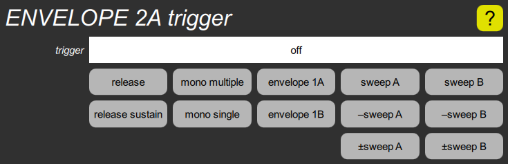

ENVELOPE trigger cluster

This cluster, which only envelopes 2A and 2B have. contains a single slider for the trigger parameter, which sets the amount of delay before the envelope starts. The highest twelve settings instead cause the envelope to be triggered by things other than the initial key press, and two of the settings cause the envelope to be generated by the virtual instrument so that all voices will share the same envelope. The buttons below the slider allow these selections to be made quickly.